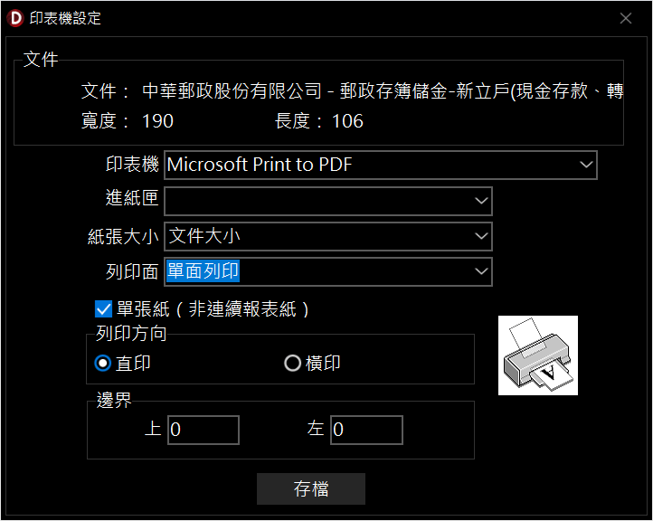

印表機
文件列印前請先指定印表機。
- 於工作頁點選文件，開啟「常用 > 印表機」。
- 選擇「印表機」，其他項目可維持預設或依需要調整。
- 按「存檔」。
備註：
- 列印位置有偏差時，調整「邊界」，詳見列印調整說明。
- 出現紙張不符的警告時，「紙張大小」改選「文件大小」。
功能說明
- 文件：顯示目前設定的文件資訊。
- 進紙匣：指定紙匣，例如手動進紙。
- 紙張大小：「印表機預設」或依文件尺寸的「文件大小」。
- 列印面：單面或雙面列印。
- 單張紙：一般紙張請勾選；使用連續報表紙時取消勾選。
- 列印方向：直印或橫印。
- 邊界：調整上、左數值，整體移動列印位置。
